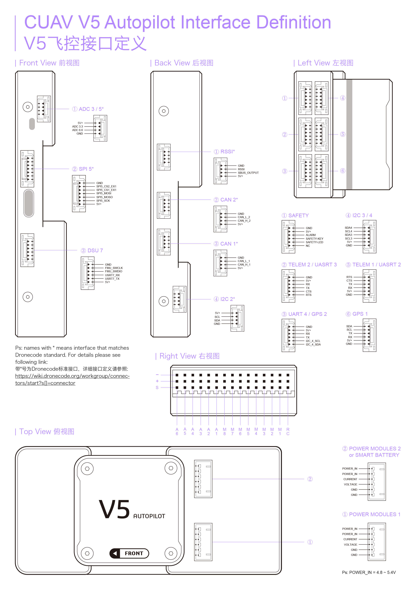

V5 AutoPilot
V5 AutoPilot® is an advanced autopilot designed and made in CUAV® .
The board is is based on the FMUv5 open hardware design. It is fully compatible with both PX4 and ArduPilot firmware. intended primarily for academic and commercial develop.

Quick Summary
- Main FMU Processor: STM32F765
- 32 Bit Arm® Cortex®-M7, 216MHz, 2MB memory, 512KB RAM
- IO Processor: STM32F100
- 32 Bit Arm® Cortex®-M3, 24MHz, 8KB SRAM
On-board sensors:
- Accelerometer/Gyroscope: ICM-20689
- Accelerometer/Gyroscope: BMI055
- Magnetometer: IST8310
- Barometer: MS5611
Interfaces:
- 8-14 PWM outputs (6 from IO, 8 from FMU)
- 3 dedicated PWM/Capture inputs on FMU
- Dedicated R/C input for CPPM
- Dedicated R/C input for PPM and S.Bus
- analog / PWM RSSI input
- S.Bus servo output
- 5 general purpose serial ports
- 4 I2C ports
- 4 SPI buses
- 2 CANBuses with serial ESC
- Analog inputs for voltage / current of 2 batteries
- Power System:
- Power: 4.3~5.4V
- USB Input: 4.75~5.25V
- Servo Rail Input: 0~36V
- Weight and Dimensions:
- Weight: 90g
- Dimensions: 44x84x12mm
- Other Characteristics:
- Operating temperature: -20 ~ 80°c（Measured value）
Purchase
Order from CUAV.
connection
 DSU7 is a new interface for cuav naming, including fmu swd and uart7 interfaces. When V5 runs PX4 firmware,uart7 is used as the DEBUG interface; when running ArduPilot firmware; uart7 is used as the communication serial port and usb is used to debug the output.
WarningThe RCIN interface is limited to powering the rc receiver and cannot be connected to any power/load.
Voltage Ratings
V5 AutoPilot can be triple-redundant on the power supply if three power sources are supplied. The three power rails are: POWER1, POWER2 and USB.
Note The output power rails FMU PWM OUT and I/O PWM OUT (0V to 36V) do not power the flight controller board (and are not powered by it). You must supply power to one of POWER1, POWER2 or USB or the board will be unpowered.
Normal Operation Maximum Ratings
Under these conditions all power sources will be used in this order to power the system:
- POWER1 and POWER2 inputs (4.3V to 5.4V)
- USB input (4.75V to 5.25V)
Building PX4 Firmware
make px4fmu-v5_default upload
Building ArduPilot Firmware
./waf configure --board CUAVv5
./waf copter --upload
Debug Port
The system's serial console and SWD interface operate on the FMU Debug port. Simply connect the FTDI cable to the Debug & F7 SWD connector. To access the I/O Debug port, the user must remove the V5-AutoPilot shell. Both ports have standard serial pins and can be connected to a standard FTDI cable (3.3V, but 5V tolerant) or [Dronecode probe]. Dronecode probe.
Peripherals
Supported Platforms / Airframes
Any multicopter / airplane / rover or boat that can be controlled with normal RC servos or Futaba S-Bus servos. The complete set of supported configurations can be seen in the Airframes Reference.